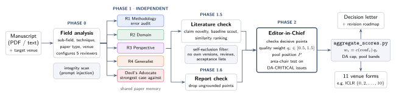

01
Calibrated to the submission pool
Reviewers place the paper among all submissions first, then score. No default “borderline”.
Five independent reviewers, each looking from a different angle, and an Editor-in-Chief who checks the decisive points against your manuscript, weighs the reviews and decides. Tuned for computer vision, deep learning and ML; usable in any field.
The output is a simulation to help you strengthen a paper, not a prediction of any venue's decision.
“Review this paper for CVPR.” Works in Claude, Claude Code and Codex. No API key or server.
Scores in the venue's own form (e.g. ICLR rating, CVPR 6-point), plus a rebuttal draft or a revision check on request.
Ranking agreement with human ICLR 2026 scores on 20 papers (Sonnet, high effort); two human reviewers agree at 0.25. See evaluation
How it works
The same structure a program committee uses: configure a panel for the paper's real sub-field, collect independent reports, then let an area chair weigh them against the evidence.
Reads the whole paper, identifies sub-field and technique (“token pruning + latency benchmarking”, not “deep learning”), scans for text addressed to AI reviewers, and configures the panel.
Verifies each decisive point in the paper, weights reviewers by review quality, rules on every critical issue, places the paper in the venue's submission pool and decides.
Decision letter, consensus map, both score lists in the venue's own form, and a prioritized revision roadmap. Optional Socratic coaching.

Design principles
Nine safeguards against the usual failures of human and AI reviewing.
Reviewers place the paper among all submissions first, then score. No default “borderline”.
Reviewers' raw scores stay untouched; the editor's view weights each reviewer by review quality.
Argues the strongest case against the paper; only issues the editor confirms as fatal cap the decision.
Every claimed error needs a location, a quote and a check. Suspicions become questions.
Searches arXiv for related work and baselines, but never for the paper itself or its reviews.
Checklists for detection, segmentation, 3D, restoration, generation, VLMs, video, medical and efficient models.
The manuscript is data, never instructions. Hidden text is flagged and never changes a score.
A standard-library script turns the reviews into the same scores every time.
No fabricated citations, fictional personas, and every point tied to a place in the paper.
Modes & venues
Say it naturally; the skill picks the mode.
Say something like: “Review this paper for CVPR”
You getFive reports, EIC meta-review, editorial decision and revision roadmap
Say something like: “Is my paper ready for submission?”
You getEIC quick assessment plus a submission-readiness check (anonymity, page limit, checklists)
Say something like: “Are my baselines fair?”
You getClaim-to-evidence map, fairness and statistics audits, prioritized fixes with compute estimates
Say something like: “Walk me through the review”
You getSocratic, one-issue-at-a-time dialogue
Say something like: “Help me write the rebuttal” + reviews
You getTriage of every point and a draft in the venue's format
Say something like: “Does my revision address the reviews?”
You getItem-by-item verification and a new decision
Scores are translated into each venue's own form, and a cross-venue outlook shows how the same paper would likely fare elsewhere.
Evaluation
Pilot · 20 papersWe reviewed 20 ICLR 2026 submissions (accepted, rejected, withdrawn) from anonymized arXiv versions, then compared the skill's scores with the real human scores it never saw.
Spearman correlation with the mean human score. 0 = no relation, 1 = same order. Higher is better; the line shows the 95% range.
AUC: the chance an accepted paper outscores a rejected one. 0.5 = coin flip, 1 = always.
NMAE: average gap to the human score on ICLR's 0–10 scale, as a share of the scale. Lower is better.
Evaluation
Pilot · 20 papers · 247 human issuesWe matched the weaknesses in the skill's five reports with those in the real ICLR 2026 reviews of the same papers. A blinded annotator split both into issues and matched them, without knowing which side was human.
Caveats: 20 papers; LLM annotators; humans saw the figures, the AI read the text; agreeing with humans is not the same as being right.
Share of the human reviewers' main issues that the AI panel also raised. Higher is better.
Hit rate of the human issues, by topic.
Likely reason for the 141 human issues it did not raise (number of issues).
Related work
Most AI reviewers fine-tune an open model on past conference reviews. This skill instead runs a strong general model through a structured panel, so it needs no training data.

Get started
Everything is Markdown instructions plus optional standard-library Python. No API key or server needed.
academic-paper-reviewer.skill..zip if asked — same format).git clone https://github.com/Shyandram/academic-paper-reviewer.skill.git
mkdir -p ~/.claude/skills
cp -r academic-paper-reviewer.skill/academic-paper-reviewer ~/.claude/skills/Restart the session and ask “review paper.pdf”. In Claude Code the five reviewers can run as parallel subagents, which keeps them independent.
python3 tools/install_codex_skill.py # project-local link
python3 tools/install_codex_skill.py --skills-dir ~/.agents/skills # personalThen start a new session and invoke $academic-paper-reviewer Review /path/paper.pdf for CVPR.
Upload the academic-paper-reviewer/ folder through the Skills API and attach it to requests that use the code-execution tool. See Anthropic's Agent Skills documentation for current endpoints.
Review this paper: [attach PDF]
Quick look — is this ready for ECCV?
Check my experiments only. Target venue: NeurIPS.
Here are my three CVPR reviews. Help me write the one-page rebuttal.
Compare this paper across CVPR, ICLR and TMLR — which venue fits best?Before you use it
Stress-test your own drafts, learn to review, or give feedback with the authors' consent.
Many CV/ML venues restrict or forbid putting confidential submissions into AI tools. Check your venue's policy.
Recommended references follow a no-fabrication rule, but check each one before you use it.
Profiles are a guide, not a substitute for the current call for papers.